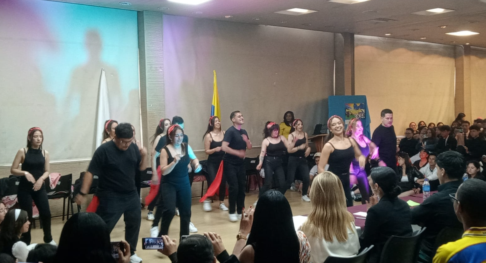
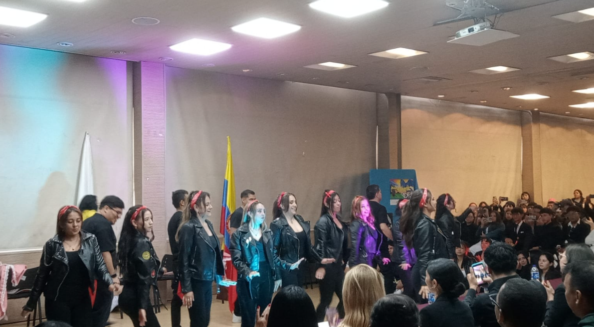
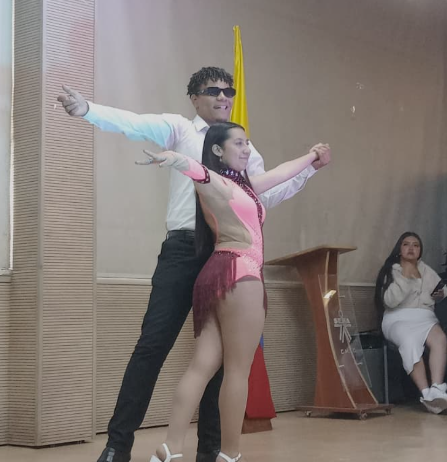

Video 1
Una probadita del ambiente, con ese toque de "todos grabando porque esto hay que subirlo".

Evento, ritmo y cero pena
Bienvenidos a esta mini página donde hablamos de baile, lectura y de ese momento exacto en el que alguien dice "yo no bailo" y cinco minutos después está haciendo pasos prohibidos.
Fue de esos encuentros donde hay público grabando, gente aplaudiendo, bailarines dándolo todo y una energía que decía: "si se cae el paso, se improvisa con actitud".
El baile tiene algo mágico: no necesita explicar demasiado. Una mirada, un giro, una pausa dramática y ya todo el mundo está pendiente. Aquí hubo pasos fuertes, trabajo en equipo, parejas, grupos y momentos de "uy, ese final estuvo de película".
Además, bailar frente a tanta gente no es cualquier cosa. Hay que tener coordinación, memoria, confianza y una cara de "sí, esto estaba planeado" incluso cuando el zapato decide vivir su propia aventura.


"Leer te mueve la mente; bailar te mueve todo lo demás. Y si mezclas los dos, mínimo terminas con cultura y dolorcito en las piernas."
Leer no es solo sentarse serio como estatua de biblioteca. Leer también es imaginar escenas, escuchar voces en la cabeza de los personajes y meterse tanto en una historia que alguien te habla y uno responde: "ajá", sin haber escuchado absolutamente nada.
Así como un baile cuenta una historia con movimientos, un texto lo hace con palabras. Los dos necesitan emoción, pausas, intención y un poquito de drama, porque sin drama la vida sería una diapositiva en blanco.
En el escenario, cada paso parecía una frase. Algunos movimientos eran punto y coma, otros eran signos de exclamación, y el público era ese lector emocionado que no quiere que la página termine.
Presiona el botón. Prometo que el chiste intenta bailar.
Haz clic en una foto para verla grande. Sí, aquí también se vale decir "esa quedó brutal".
Dale play y disfruta. Volumen recomendado: el suficiente para que la sala se sienta viva.
Una probadita del ambiente, con ese toque de "todos grabando porque esto hay que subirlo".
Más movimiento, más público y más razones para decir que el evento estuvo encendido.
Bailar, leer y compartir son formas distintas de contar lo que sentimos. Unos usan pasos, otros palabras, otros aplausos. Lo importante es que todos terminamos metidos en la historia.